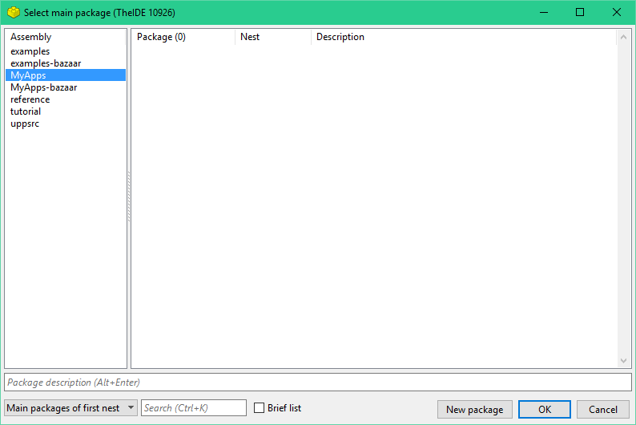
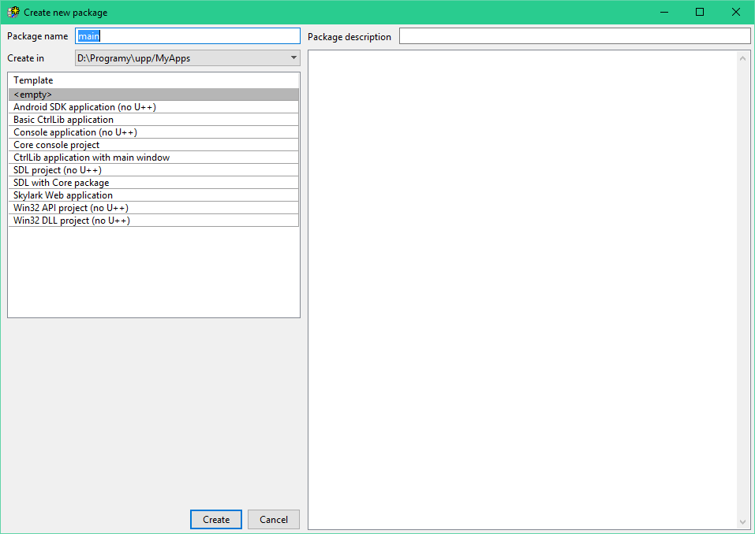
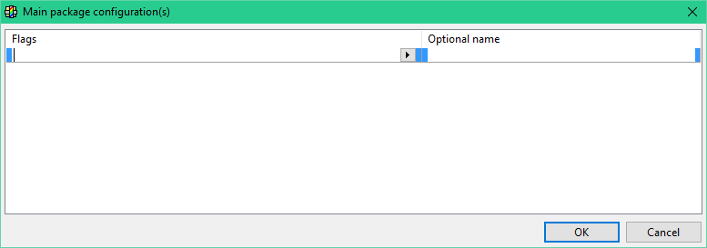
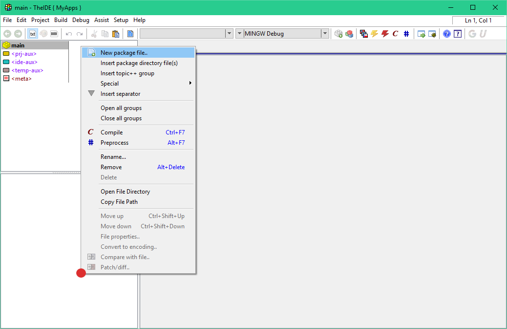
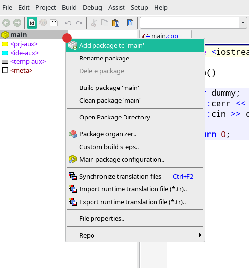
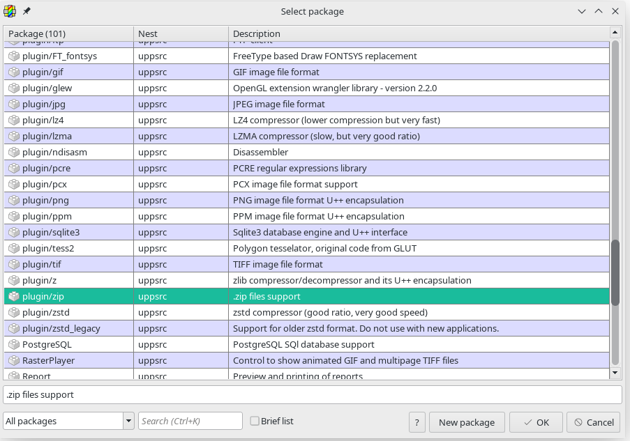
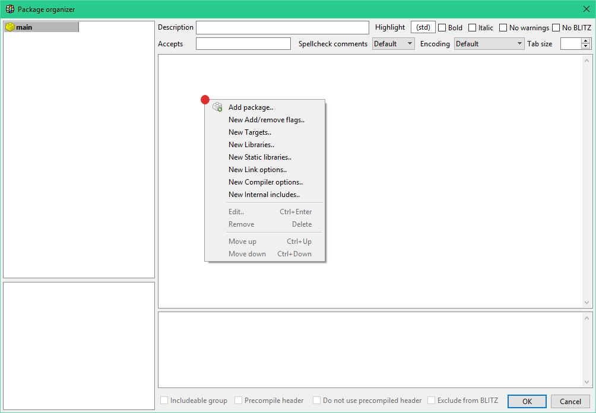
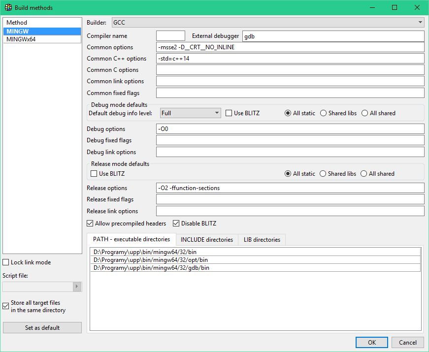
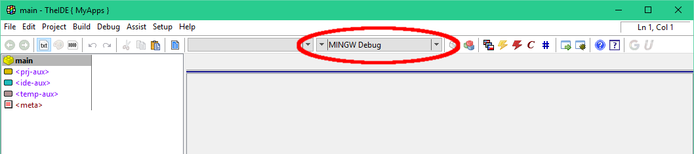
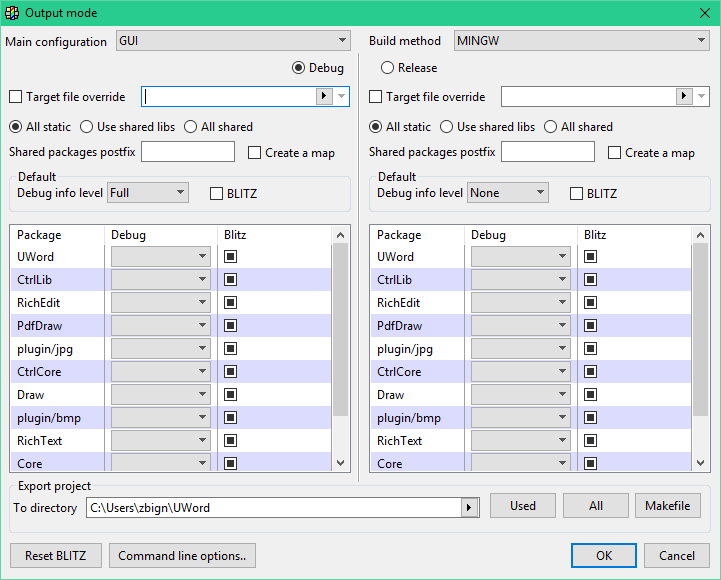

Getting started with TheIDE
Table of contents
1. Launching TheIDE
2. Assemblies and Packages
2.1 Selecting assembly
2.2 Creating new package
3. Configuring package
4. Creating new file
5. Adding dependency to package
6. Explanations about TheIDE
6.1 What is stored where?
6.2 Package organizer
6.3 Build methods
6.4 Output mode
1. Launching TheIDE
After installing U++ find the appropriate TheIDE executable file and launch it. By default the file should be localized in the installation directory. However, it depends on the operating system and the way you installed U++.
2. Assemblies and Packages
In this section we show how to create your own main package. It can be treated as project, solution etc.
2.1 Selecting assembly
After you launch TheIDE on the screen window should appear. This window acts as a hub. When you can select/create packages and assemblies. You can back to this window at any time when you are working with TheIDE. Just select from main menu "File" entry and select "Set main package" option.
First of all, select assembly which is called "MyApps". It exists by default and it is intended to store user application. To select this assembly click on its name once. If you want to read more about assemblies see this reference page for more details. In brief assembly is a collection of packages.

In this window you can perform the following operations:
You can create a new assembly by right-clicking on the assembly list and choosing "New assembly". If you select an existing assembly before this, the directory settings from the existing assembly will be used.
If you're just getting started, leave this as it is and continue creating package process.
2.2 Creating new package
To create a new package, press the "New package" button localized on the bottom of the window. After that on the screen appears the package creator.

To create new package you should execute following steps:
Enter a package name, for this example we'll type "main", leave the "create in" directory as it is for now (i.e. on MyApps directory).
Optionally you can fill in a short description of the package, that will appear in the package selection dialog.
It is possible to choose one of predefined templates, but we leave it on <empty> for now.
Finally, press the "Create" button on the bottom of the window.
3. Configuring package
At the beginning, let's assume that the package you have created is main. Please note, that any package created or selected within manager is by default main. To configure it, select "Main package configuration" from the "Project" menu. Alternatively, you can right mouse click on package list and select the same option.

Let's take a look at the possibilities available in "Main package configuration" window:
Here you should set the configuration flags that your program needs.
For the main package, you must specify at least one possible configuration (otherwise you will not see your new package listed under the "MyApps" assembly - unless you select "all packages" - because only main packages are listed by default).
Just add an empty row for now (right click->"Append row" or press Insert key). The "optional name" can be left empty or you can enter any meaningful description for your own reference.
Note: For windows users: If you add "GUI" flag here, the standard cin/cout/cerr will not be connected to anything. (so even if you start the program from the command line you will not see any text-output).
Press OK.
Here is a need of small digression. Several predefined templates mention in the previous chapter have main package setup by default. It means that there is not need to execute above steps. Following templates fall under above definition: Basic "CtrlLib application", "Core console project" and "Skylark web application".
Not main package can be used as supportive module for your projects. You can place their common functions and classes and share between other packages. In this way packages delivered by U++ work like Core and CtrlLib.
4. Creating new file
You can now add files to you package, for this example, add a new file "main.cpp" to the package. Below is the list of steps that will guild you through the process:
Right click on the lower-left part of TheIDE (or on "File" in menu) and choose "Insert package directory file(s)", type "main.cpp" and click "Open". If the file does not exist, it will be created - that is why you won't find "New file" anywhere in TheIDE, it is just not needed.

Alternatively, in the newer versions of TheIDE, you can create new file using "New" option from the same menu shown in above image. Then simply select file type and choose name for it. This method is recommended for newer user, because it is a little bit more intuitive and straight forward than creating file by insertion (old way).
Type or copy following code into the newly created file:
#include <iostream>
int main()
{
char dummy;
std::cerr << "Hello, platform! " << std::endl;
std::cin >> dummy;
return 0;
}
If you have configured your compiler previously (you probably did, either the installer instructed you how to do it or it was done automatically), you can start the program by clicking on execute icon localized on main tool bar or by pressing CTRL+F5.
After program launch, you can close it by typing any letter. On the other hand, it can be ended by simply closing terminal window.
Now you know how to use TheIDE to compile basic C++ program. Looking at the rest of documentation will give you better idea how to unleash the full power of TheIDE and U++. The best parts to continue would be probably Packages, Assemblies and Nests and their configuration. something about the key technologies utilized in TheIDE: Assist++, Topic++, Blitz or even one of the tutorials linked from Manual section, if you want to learn more about how to use U++.
5. Adding dependency to package
You could extend your package code base by adding additional dependencies. Package at the begging uses very limited set of dependencies. If you use empty package template then there are no relationship with other packages. On the other hand package created with CtrlLib template will posses dependencies to GUI packages.
Let's assume that we have the empty package 'main' that we created at the begging of this article. Now if we would like to use zip compression provided by U++ framework all we need to do is add package "plugin/zip" to our main package. This newly added package is a part of uppsrc assembly.
Dependency relationship between packages can be established in two different ways:
By right-clicking on package in your project and selecting option "Add package to ${package_name}". Where ${package_name} is currently selected package. You must be careful to which package are you adding dependency.
By selecting package inside TheIDE and then opening "Project" menu and selecting "Add package to ${package_name}".

After that the window with package (dependency) to add should opened. Right now all we need to do is to find package we are interested in. In our case it is "plugin/zip". To speed up the whole process "Search" field can be used. After finding the package to accept the operation click on "OK" button.

Now the "plugin/zip" package is added as dependency to the main package. If we would like to refer to dependency in the source code all we need to do is to include main package header file. In our case it is:
#include <plugin/zip/zip.h>
In U++ world supportive package should have one main header. It makes using such package much more straightforward. For more information please read article about packages, assemblies and nests.
For advanced package management you should use "Package organizer". It will be described later in the article.
6. Explanations about TheIDE
6.1 What is stored where?
When you use TheIDE for the first time, it can be confusing to see that settings like static/shared building, execute-, include- and linker- paths can be set in multiple places (for instance, in Project->Package organizer, in Setup->Build methods and by clicking on the current build method in the main screen (at the top, e.g. "GCC Debug").
In the next part of this paragraph, we look at all configuration options.
6.2 Package organizer
Package organizer is localized at "Project -> Package organizer".

Everything set here is stored in the .upp file of the package.
You can use your own (or existing) compiler switches to include different things for different builds here, based on configuration flags.
Examples:
|
When
|
Libraries
|
Comment
|
MSC
|
SDL
|
some extra library to link to with VC++ compiler
|
MSC
|
SDL_ttf
|
|
MINGW
|
mingw32
|
|
MINGW
|
SDL.dll
|
mingw compiler has special feature to link directly to dll files
|
MINGW
|
SDL_ttf.dll
|
|
|
|
When
|
Compiler options
|
Comment
|
MSC
|
/Ot
|
additional compiler option for VC++.
|
|
|
When
|
Linker options
|
Comment
|
MSC
|
-nologo
|
some extra linker options when compiler is VC++.
|
|
6.3 Build methods
Build methods are localized at "Setup-> Build methods".

Look carefully at the settings here. You can create different build methods for different compilers.
Each method will store it's settings in a .bm file. The .bm (bm stands for build method) files are stored in ~/.theide on Posix systems and in the executable path of TheIDE on MS Windows.
The boxes at the top of the windows called "Debug mode default" and "Release mode default" do NOT contain the options actually used for the current build. (they are not in effect when your press F5). These are the default values used for new projects, the options for the current build can be set by clicking on the current build method in the main screen (top of the screen e.g. "GCC Debug").

Notice that it has two "pull-down" arrows. The left one selects the build method. The right one sets the current build mode, which occurs in two variants "Debug" and "Release".
6.4 Output mode
You will need to click on build method name on main TheIDE tool bar. It is shown on above image with "MINGW Debug" method.

Link mode
All static - static external libraries are preferred. This is default and recommended option for windows environment.
Shared libs - shared external libraries are preferred, but the program's packages will be linked statically. This is default and recommended option for POSIX environments.
All shared - both the external libraries and the applications packages will be compiled and linked dynamically.
Target override
You can specify a target-location for the resulting binary here. By default it will be writing to following path:
"C:\upp\out\$target\MINGW.Blitz.Debug.Shared.So.Win32\foo.exe".
|


{kind=link}
{kind=link}
{kind=link}
{kind=link}
{kind=link}
{kind=link}
{kind=link}
{kind=link}
{kind=link}
{kind=link}
{kind=link}